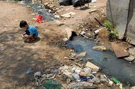
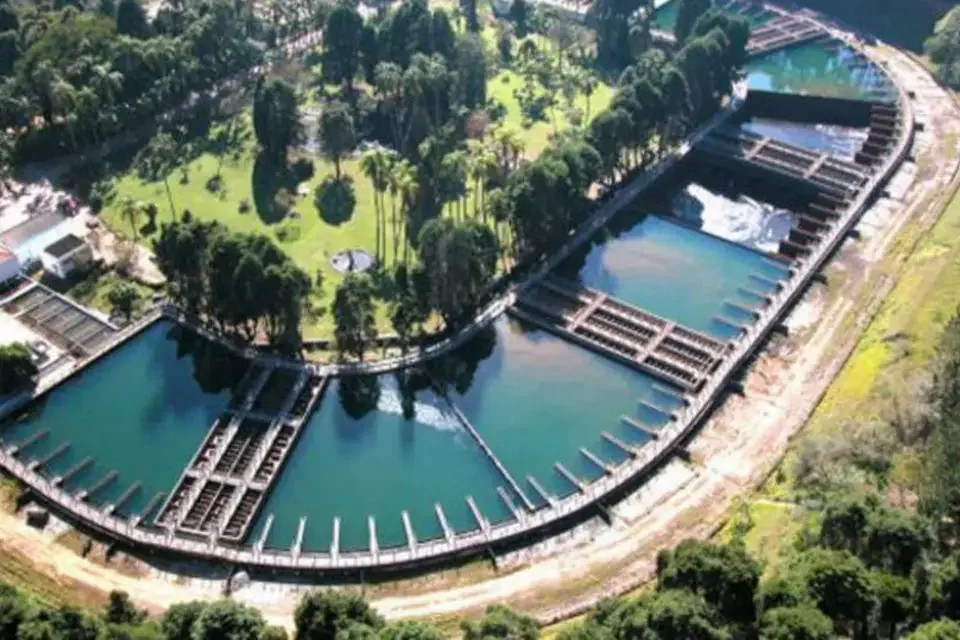
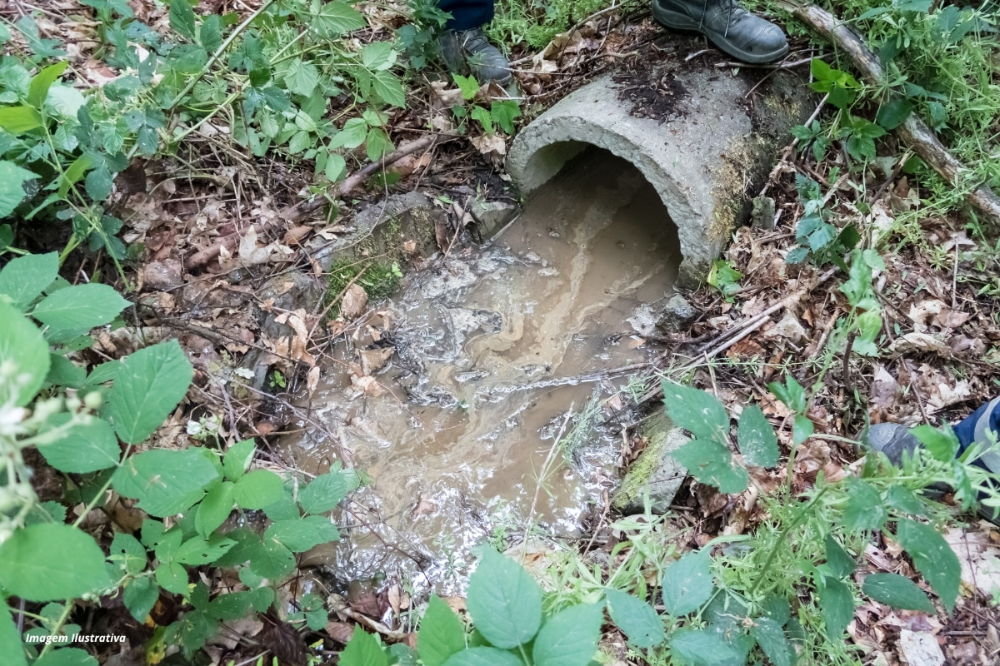
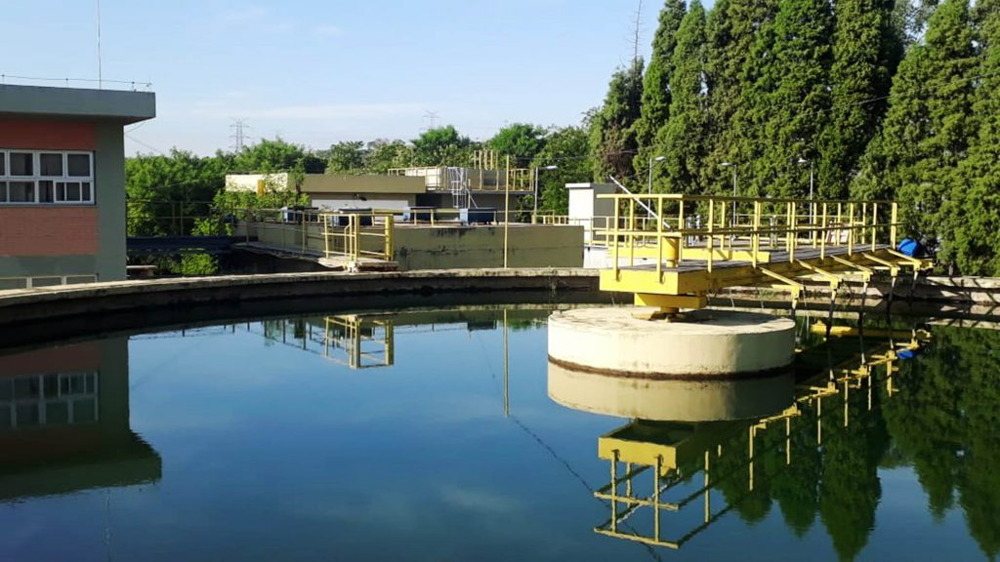

Saneamento Básico
Este é um termo utilizado em tantas mídias, nas escolas, na televisão. Mas você se lembra o que ele significa?
O saneamento básico compreende o conjunto de medidas que visam preservar ou modificar as condições do meio ambiente com a finalidade de prevenir doenças e promover a saúde, melhorar a qualidade de vida da população e garantir a sustentabilidade ambiental. Ele engloba o abastecimento de água potável, o tratamento e a disposição adequada dos esgotos sanitários, a coleta e destinação correta dos resíduos sólidos, além do controle de vetores de doenças e da drenagem urbana.
De acordo com o Saneamento Básico, as 10 piores cidades brasileiras em termos de saneamento básico, conforme o Ranking do Saneamento do Instituto Trata Brasil, são: Ananindeua (PA), Várzea Grande (MT), Maceió (AL), Rio Branco (AC), Belém (PA), São Gonçalo (RJ), Santarém (PA), Porto Velho (RO), Marabá (PA) e Macapá (AP).
   Já as cidades com os melhores sistemas de saneamento básico são: São José do Rio Preto (SP), Santos (SP), Uberlândia (MG), Niterói (RJ), Limeira (SP), Piracicaba (SP), São Paulo (SP), São José dos Pinhais (PR), Franca (SP) e Cascavel (PR).
Segundo a revista Poder360, aproximadamente 1/4 (24,3%) da população brasileira ainda não tem acesso ao saneamento básico.
Além disso, os dejetos de 203 milhões de habitantes são depositados em buracos ou fossas, sem nenhum tipo de tratamento para evitar contaminação em rios, lagos, córregos e até mesmo o mar. Com base em análises conduzidas pelo Instituto Cuidado Brasil em colaboração com a GO Associados, estima-se que aproximadamente 100 milhões de brasileiros enfrentam desafios relacionados à ausência de serviços de esgotamento sanitário, enquanto cerca de 35 milhões de indivíduos enfrentam dificuldades no acesso à água potável. Vale ressaltar que a disparidade na infraestrutura de tratamento de esgoto entre os municípios mais bem classificados e os menos favorecidos chega a alcançar uma diferença de 340%. É evidente que a carência de acesso adequado à água potável e aos serviços de saneamento básico impacta profundamente na saúde da população brasileira. Milhões de pessoas são afetadas por doenças transmitidas pela água, o que resulta em internações hospitalares e problemas de saúde generalizados.
Abaixo listamos alguns termos importantes referentes ao saneamento básico e suas definições.
Esgotamento Sanitário: constituído pelas atividades e pela disponibilização e manutenção de infraestruturas e instalações operacionais necessárias à coleta, ao transporte, ao tratamento e à disposição final adequados dos esgotos sanitários, desde as ligações prediais até sua destinação final para produção de água de reúso ou seu lançamento de forma adequada no meio ambiente;
Limpeza Urbana e Manejo de Resíduos Sólidos: constituídos pelas atividades e pela disponibilização e manutenção de infraestruturas e instalações operacionais de coleta, varrição manual e mecanizada, asseio e conservação urbana, transporte, transbordo, tratamento e destinação final ambientalmente adequada dos resíduos sólidos domiciliares e dos resíduos de limpeza urbana;
Drenagem e Manejo das Águas Pluviais Urbanas: constituídos pelas atividades, pela infraestrutura e pelas instalações operacionais de drenagem de águas pluviais, transporte, detenção ou retenção para o amortecimento de vazões de cheias, tratamento e disposição final das águas pluviais drenadas, contempladas a limpeza e a fiscalização preventiva das redes.